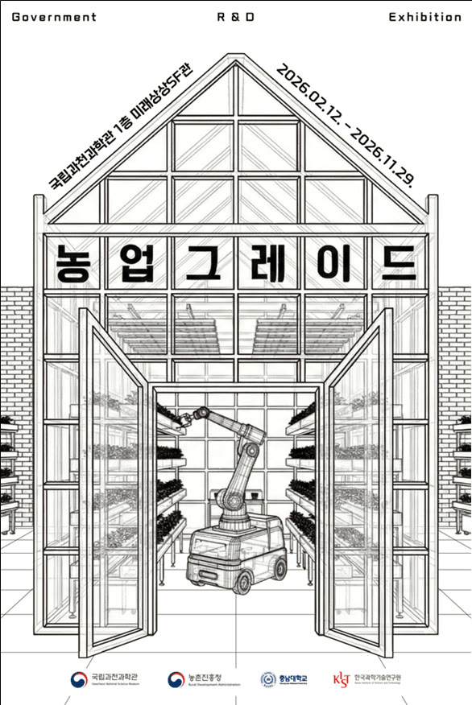

Exhibit robot · Metafarmers · Gwacheon National Science Museum
An apple-harvesting robot for a science museum
A robot that Metafarmers delivered to the Gwacheon National Science Museum for its exhibition on farm technology. Visitors watch it find apples and pick them without bruising.
- Client
- Gwacheon National Science Museum
- Exhibition
- 〈농업그레이드〉, Feb 12 – Nov 29, 2026
- Gripper
- Apple-harvesting gripper from the Rural Development Administration
- Role
- System, apple detection, robot control, UI


The exhibition
〈농업그레이드〉 is a special exhibition at the museum, open from February 12 to November 29, 2026. It presents farm research from the Rural Development Administration, Chungnam National University and KIST for a general audience.
The apple-harvesting robot carries a gripper developed by the Rural Development Administration and shows the full pick: it recognizes an apple on the tree and picks it without bruising. A hydrogen tractor and a transport robot that follows a farm worker are shown alongside it.
My part
Metafarmers built the whole robot around the Rural Development Administration's gripper and finished delivery around March 2026. I worked on it before the Omni Farmer work.
My part was the system design, apple detection and the touchscreen UI, along with control of the mobile base, the lift and the robot arm, and the gripper firmware.
Press
Feb 2026Press release on 〈농업그레이드〉 (Korean)
Feb 2026과천과학관, 피지컬 AI 활용 미래 농업 '농업그레이드' 특별전 (Korean)
Feb 2026사과 수확 로봇부터 수소 트랙터까지…미래 농업 한눈에 (Korean)